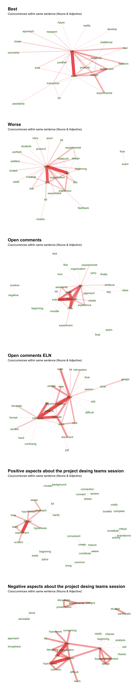

This page refers to student surveys of “Experimental Advanced Biochemistry I” course (Biochemistry Degree, Universidad Autónoma de Madrid). Description of questionnaires and analysis of quantitative questions is in the main page here. The GitHub repo contains the original files of all analyses.
The data is made available under the Creative Common License (CC BY-NC-ND 3.0 ES).
Preliminary
This is only a preliminary analysis. Contact modesto.redrejo@uam.es for more information.
2 Free-text questions
The list of questions is available in the companion report. Free-text questions (50, 51, 52, 75, 76, 77) will be processed to identify more common keywords and terms co-ocurrence. First, text are translated with deeplr package and save it into a new table.
Show the code
#load the datadata <-read.csv("merged_data.csv")#to deal with the deeplr words limit, each question is translated independentlyQ50 <-toEnglish2(data$Q50, auth_key ="9c9bf91e-f863-9406-d285-2f209fc1828d:fx")Q51 <-toEnglish2(data$Q51, auth_key ="9c9bf91e-f863-9406-d285-2f209fc1828d:fx")Q52 <-toEnglish2(data$Q52, auth_key ="9c9bf91e-f863-9406-d285-2f209fc1828d:fx")Q75 <-toEnglish2(na.omit(data$Q75), auth_key ="9c9bf91e-f863-9406-d285-2f209fc1828d:fx")Q76 <-toEnglish2(na.omit(data$Q76), auth_key ="9c9bf91e-f863-9406-d285-2f209fc1828d:fx")Q77 <-toEnglish2(na.omit(data$Q77), auth_key ="9c9bf91e-f863-9406-d285-2f209fc1828d:fx")#subset data and sweep sp to endata_en <- data[,c(2,52,53,54,77,78,79)]data_en$Q50 <- Q50data_en$Q51 <- Q51data_en$Q52 <- Q52data_en$Q75[which(!is.na(data_en$Q75))] <- Q75data_en$Q76[which(!is.na(data_en$Q76))] <- Q76data_en$Q77[which(!is.na(data_en$Q77))] <- Q77write.csv(data_en,"survey_open_en.csv")
Then, we processed the table and process it with akc and udpipe R packages. The code is largely based in an akctutorial and updpipeextended vignette.
Previously, but after some rounds of try and error, we also performed some ad hoc word switching to unify terms (e.g. combine lab and laboratory, remove instructors’ names, etc.). We found that the combination of the new akc package and udpipe achieved the best automatic term extraction and lemmatization with improved selection of key terms with reduced noise (conjunctions and other extra words). However, as akc is designed for text network-based classification which is beyond our scope, so we decided to implement udpipe network plot. Each plot contains the connections of the top-40 most common keywords (nouns and verbs).
Show the code
q_en <-read.csv("survey_open_en.csv",row.names =NULL, stringsAsFactors =FALSE)#naif combination of some identical termsq_en <-as.data.frame(sapply(q_en,tolower))q_en <-data.frame(apply(q_en, 2, function(x) gsub(' ','',x)))q_en <-data.frame(apply(q_en, 2, function(x) gsub('laboratory','lab',x)))q_en <-data.frame(apply(q_en, 2, function(x) gsub('script','protocol',x)))q_en <-data.frame(apply(q_en, 2, function(x) gsub('team','group',x)))q_en <-data.frame(apply(q_en, 2, function(x) gsub('groupwork','group',x)))q_en <-data.frame(apply(q_en, 2, function(x) gsub('learning','learn',x)))q_en <-data.frame(apply(q_en, 2, function(x) gsub('sandra','assistants',x)))q_en <-data.frame(apply(q_en, 2, function(x) gsub('barbara','assistants',x)))q_en <-data.frame(apply(q_en, 2, function(x) gsub('barbara acosta','assistants',x)))q_en <-data.frame(apply(q_en, 2, function(x) gsub('rojo','instructors',x)))q_en <-data.frame(apply(q_en, 2, function(x) gsub(' ana ', 'instructors',x)))#since "ana" is within some words, I also changed "ANA" and "Ana Rojo" to rojo manuallyq_en <-data.frame(apply(q_en, 2, function(x) gsub('luis','instructors',x)))q_en <-data.frame(apply(q_en, 2, function(x) gsub('juan','instructors',x)))q_en <-data.frame(apply(q_en, 2, function(x) gsub('modesto','instructors',x)))q_en <-data.frame(apply(q_en, 2, function(x) gsub('benilde','instructors',x)))q_en <-data.frame(apply(q_en, 2, function(x) gsub("\\\\","",x)))q_en <-data.frame(apply(q_en, 2, function(x) gsub('oscar','instructors',x)))q_en <-data.frame(apply(q_en, 2, function(x) gsub('teachers','instructors',x)))q_en <-data.frame(apply(q_en, 2, function(x) gsub('internship','practices',x)))q_en <-data.frame(apply(q_en, 2, function(x) gsub('internshipss','practices',x)))q_en <-data.frame(apply(q_en, 2, function(x) gsub('script','protocol',x)))q_en <-data.frame(apply(q_en, 2, function(x) gsub('notebooks','notebook',x)))#clean and extrack keywords#from https://hope-data-science.github.io/akc/articles/tutorial_raw_text.html# https://cran.r-project.org/web/packages/akc/vignettes/akc_vignette.html#model with udpipe & create dictionary #download the model the first time#ud_model <- udpipe_download_model(language = "english")#ud_model <- udpipe_load_model(ud_model$file_model)#load the model from HDud_model <-udpipe_load_model("/Users/modesto/Documents/GitHub/bqexav/english-ewt-ud-2.5-191206.udpipe")x <-list()Q <-c("Q50","Q51","Q52","Q75","Q76","Q77")for (i in1:6){ x[[i]] <-as.data.frame(udpipe_annotate(ud_model, x = q_en[,i+2], tagger="default",parser="none"))names(x)[[i]] <- Q[i]}# get stop words from `tidytext` packagestop_words %>%pull(word) %>%unique() -> my_stopword#make dictionariesmy_dict <-list()for (i in1:6){ my_dict[[i]] <-make_dict(x[[i]]$lemma)#names(my_dict)[[i]] <- Q[i]}#extract keywords with akcextracted_keywords <-list()for (i in1:6){ q_en %>%keyword_extract(id ="X",text =colnames(q_en)[i+2],dict = my_dict[[i]],stopword = my_stopword) -> extracted_keywords[[i]]names(extracted_keywords)[[i]] <- Q[i]}#clean dataclean_data <-list()for (i in1:6){ extracted_keywords[[i]] %>%keyword_clean() -> clean_data[[i]]names(clean_data)[[i]] <- Q[i]}#visualize network as in udpipe vignette#plot from akc extracted_keywordsquestions <-read.csv("questions_final.csv", head=TRUE, sep=",") #load questionstitles <- questions[c(50,51,52,75,76,77),4]stats <-list()wordnetwork <-list()plotkey <-list()for (i in1:6){ stats[[i]] <-cooccurrence(x = clean_data[[i]], term ="keyword", group ="id") wordnetwork[[i]] <-head(stats[[i]], 40) wordnetwork[[i]] <-graph_from_data_frame(wordnetwork[[i]]) plotkey[[i]] <-ggraph(wordnetwork[[i]], layout ="fr") +geom_edge_link(aes(width = cooc, edge_alpha = cooc), edge_colour ="indianred2") +geom_node_text(aes(label = name), col ="darkgreen", size =7, repel=T,box.padding=0.06) +theme_graph(base_family ="Arial", plot_margin =margin(0, 30, 0, 30)) +theme(legend.position ="none", plot.margin=unit(c(0,0,2,0), "cm")) +labs(title =titles[[i]], subtitle ="Cooccurrences within same sentence (Nouns & Adjective)") }#show the plotsggarrange(plotlist=plotkey,nrow=6,ncol=1)

3 Answers per year
Now we split the plots per year. To facilitate the understanding, we have selected the top-20 words.
Show the code
#extract keywordsextracted_keywords <-list()indice <-matrix(1:36, byrow =TRUE, nrow =6)for (i in1:6){for (j in1:6){ tablita <- q_en[q_en$Curso ==2016+j,]if (any(is.na(tablita[,i+2][tablita$Curso ==2016+j]))) next tablita %>%keyword_extract(id ="X",text =colnames(tablita)[i+2],dict = my_dict[[i]], stopword = my_stopword) -> extracted_keywords[[indice[i,j]]]names(extracted_keywords)[[indice[i,j]]] <- Q[i] }}#clean dataclean_data <-list()for (i in1:36){if (is.null(extracted_keywords[[i]])) next extracted_keywords[[i]] %>%keyword_clean() -> clean_data[[i]]names(clean_data)[[i]] <- Q[i]}#visualize#plot from akc extracted_keywordsyear <-rep(unique(q_en$Curso), 6)stats <-list()wordnetwork <-list()plotkey <-list()for (i in1:36){if (is.null(clean_data[[i]])) next stats[[i]] <-cooccurrence(x = clean_data[[i]], term ="keyword", group ="id") wordnetwork[[i]] <-head(stats[[i]], 20) wordnetwork[[i]] <-graph_from_data_frame(wordnetwork[[i]]) plotkey[[i]] <-ggraph(wordnetwork[[i]], layout ="fr") +geom_edge_link(aes(width = cooc, edge_alpha = cooc), edge_colour ="indianred2") +geom_node_text(aes(label = name), col ="darkgreen", size =6,repel=T,box.padding=0.06) +theme_graph(base_family ="Arial", plot_margin =margin(0, 15, 0, 15)) +theme(legend.position ="none", plot.margin=unit(c(0,0,1,0), "cm")) +labs(title =paste0(titles[[ifelse( !(i %%6==0),as.integer(i/6)+1,i/6)]], "- ",year[i]), subtitle ="Cooccurrences within same sentence (Nouns & Adjective)")}#show the plotsplotyear <-Filter(Negate(is.null),plotkey)ggarrange(plotlist=plotyear,nrow=28,ncol=1)